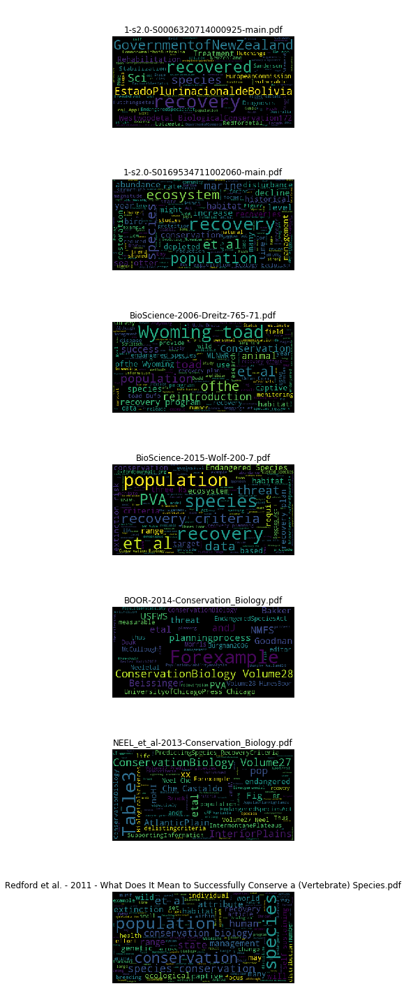

Making WordClouds
Entry format: as-you-go
Notebook setup
Define some variables
import os
outdir = os.getcwd() + '/nb_outputs/making_wordclouds'
if not os.path.isdir(outdir): os.makedirs(outdir)
Importage
# Generic imports
import os,sys,glob,h5py,itertools,multiprocessing,\
numpy as np,pandas as pd
# Visualization stuff
%matplotlib inline
from matplotlib import pyplot as plt
import seaborn as sns
from IPython.display import display as d
# PDF parsing and wordcloud stuff
import PyPDF2
from wordcloud import WordCloud
Install some libraries if needed
!pip install PyPDF2
!pip install seaborn
!pip install wordcloud
Go to output folder
os.chdir(outdir)
Ok, let’s get cracking…
Test run
Test run on some papers from a friend on recovery in conversation.
pdfs_list = glob.glob('../../../files/recovery_papers_for_word_cloud/*.pdf')
def get_text(fname):
pdf = PyPDF2.PdfFileReader(open(fname, "rb"))
text = ' '.join([page.extractText().replace('\n', ' ') for page in pdf.pages])
return text
texts = {p: get_text(p) for p in pdfs_list}
all_texts = ' '.join(texts.values())
Here are some snippets from each paper. Some have clearly not parsed very well…
for k,v in texts.items():
print('\n\n\nPaper: %s\n\n' %k)
print(v[:1000])
Paper: ../../../files/recovery_papers_for_word_cloud/1-s2.0-S0006320714000925-main.pdf
PerspectiveRe-definingrecovery:Ageneralizedframeworkforassessingspecies recoveryAlanaWestwood ,EmilieReuchlin-Hugenholtz,DavidM.Keith DepartmentofBiology,DalhousieUniversityHalifax,NovaScotiaB3H4R2,Canada articleinfo Articlehistory: Received2October2013 Receivedinrevisedform13January2014 Accepted22February2014 Availableonline22March2014 Keywords: Conservation ProtectionEndangeredspecies Recovery Speciesatrisk PolicyabstractAtpresent,theconceptsof‘recovery’and‘recoveredstate’arepoorlydefinedandoftenconfusedwithin academicliteratureandlegislation.Thesedefinitionalinconsistenciesresultinglobaladhocattemptsat recoveryandrecoveryplansthattypicallyexhibitlowsuccessrates,andwhoseoutcomesaredifficultto evaluate.Thereisadireneedforaninternationallyacceptedframeworktoguidethedevelopmentof plansfortherecoveryofpopulations,species,andecosystems.Suchaframeworkmustdistinguish betweentheprocessofrecoveryandtheend-stateofrecovered,andimplementquantifiable,generaliz- ableguidelinesthatensureoptimalout
Paper: ../../../files/recovery_papers_for_word_cloud/1-s2.0-S0169534711002060-main.pdf
Recovery of marine animal populationsand ecosystemsHeike K. Lotze1, Marta Coll1,2, Anna M. Magera1, Christine Ward-Paige1andLaura Airoldi31Biology Department, Dalhousie University, Halifax, Nova Scotia, B3H 4R2, Canada2Institut de Cie` ncies del Mar (ICM-CSIC), Passeig marõ«tim de la Barceloneta, n 37-49, 08003, Barcelona, Spain3Dipartimento di Biologia Evoluzionistica Sperimentale and CIRSA, Universita` di Bologna, Via S. Alberto 163, 48123 Ravenna, ItalyMany marine populations and ecosystems have experi-enced strong historical depletions, yet reports of recov-eries are increasing. Here, we review the growingresearch on marine recoveries to reveal how commonrecovery is, its magnitude, timescale and major drivers.Overall, 10Œ50% of depleted populations and ecosys-tems show some recovery, but rarely to former levelsof abundance. In addition, recovery can take many dec-ades for long-lived species and complex ecosystems.Major drivers of recovery include the reduction of humanimpacts, esp
Paper: ../../../files/recovery_papers_for_word_cloud/BioScience-2006-Dreitz-765-71.pdf
Forum In a perfect world,recovery programs would have adequate funding,with public and scientific support,and would be built on a foundation ofreliable data.In reality,many ofthese essential ingredients are missing from most recovery programs.For example,the lack ofongoing training to help workers remain abreast ofnew methods and ideas (Ander- son et al.2003),the appointment ofinexperienced person- nel to key positions (Reading and Miller 1994),and the lack ofcoordination among agencies may particularly affect re- covery programs.Because recovery programs are often car- ried out with a thin margin for error,they require strong, qualified leadership with up-to-date knowledge on species and conservation methods. Suggested modifications to the Endangered Species Act,as well as critiques and assessments ofrecovery plans,have been published since the early 1990s (Tear et al.1993,Hoekstra et al.2002).The recovery program for the Wyoming toad ( Bufobaxteri ) lacks many ofthe esse
Paper: ../../../files/recovery_papers_for_word_cloud/BioScience-2015-Wolf-200-7.pdf
Forum 200 BioScience February 2015 / Vol. 65 No. 2 http://bioscience.oxfordjournals.org BioScience 65: 200Œ207. © The Author(s) 2015. Published by Oxford University Press on behalf of the American Institute of Biological Sciences. All rights reserved. For Permissions, please e-mail: journals.permissions@oup.com. doi:10.1093/biosci/biu218 Advance Access publication 21 January 2015 Beyond PVA: Why Recovery under the Endangered Species Act Is More than Population Viability SHAYE WOLF, BRETT HARTL, CARLOS CARROLL, MAILE C. NEEL, AND D. NOAH GREENWALD Recovery criteria under the Endangered Species Act are the objective, measurable targets for determining whether the recovery of listed species has been achieved. Existing criteria have been criticized as inconsistent and poorly supported. Recent proposals for improving those criteria have recommended framing them around population viability analysis (PVA) and setting criteria on the basis of extinction risk thresholds. Used in
Paper: ../../../files/recovery_papers_for_word_cloud/BOOR-2014-Conservation_Biology.pdf
Review AFrameworkforDevelopingObjectiveand MeasurableRecoveryCriteriaforThreatened andEndangeredSpecies GINAK.HIMESBOOR EcologyDepartment,MontanaStateUniversity,P.O.Box173460,Bozeman,MT59717,U.S.A., emailgkhimesboor@montana.edu Abstract: ForspecieslistedundertheU.S.EndangeredSpeciesAct(ESA),theU.S.FishandWildlifeServiceand NationalMarineFisheriesServicearetaskedwithwritingrecoveryplansthatincludeÒobjective,measurable criteriaÓthatdefinewhenaspeciesisnolongeratriskofextinction,butneithertheactitselfnoragency guidelinesprovideanexplicitdefinitionofobjective,measurablecriteria.Pastreviewsofrecoveryplans, includingonepublishedin2012,showthatmanycriterialackquantitativemetricswithclearbiological rationaleandarenotmeetingthemeasureableandobjectivemandate.Ireviewedhowobjective,measureable criteriahavebeendefinedimplicitlyandexplicitlyinpeer-reviewedliterature,theESA,otherU.S.statutes, andlegaldecisions.Basedonasynthesisofthesesources,Iproposethefollowing6standardsbeusedas minimumrequirementsf
Paper: ../../../files/recovery_papers_for_word_cloud/NEEL_et_al-2013-Conservation_Biology.pdf
ContributedPaper PredictingRecoveryCriteriaforThreatenedand EndangeredPlantSpeciesontheBasisofPast AbundancesandBiologicalTraits MAILEC.NEELANDJUDYP.CHE-CASTALDO* DepartmentofPlantScienceandLandscapeArchitectureandDepartmentofEntomology,UniversityofMaryland,CollegePark,MD 20742,U.S.A. Abstract: RecoveryplansforspecieslistedundertheU.S.EndangeredSpeciesActarerequiredtospecify measurablecriteriathatcanbeusedtodeterminewhenthespeciescanbedelisted.Forthe642listed endangeredandthreatenedplantspeciesthathaverecoveryplans,weappliedrecursivepartitioningmethods totestwhetherthenumberofindividualsorpopulationsrequiredfordelistingcanbepredictedonthe basisofdistributionalandbiologicaltraits,previousabundanceatmultipletimesteps,oracombination oftraitsandpreviousabundances.Wealsotestedlistingstatus(threatenedorendangered)andtheyear therecoveryplanwaswrittenaspredictorsofrecoverycriteria.Weanalyzedseparatelyrecoverycriteria thatwerestatedasnumberofpopulationsandasnumberofindividuals(population-baseda
Paper: ../../../files/recovery_papers_for_word_cloud/Redford et al. - 2011 - What Does It Mean to Successfully Conserve a (Vertebrate) Species.pdf
Articles www.biosciencemag.orgJanuary 2011 / Vol. 61 No. 1 What Does It Mean to Successfully Conserve a (Vertebrate) Species? KENT H. REDFORD, GEORGE AMATO, JONATHAN BAILLIE, PABLO BELDOMENICO, ELIZABETHL. BENNETT, NANCY CLUM, ROBERTCOOK, GUSTAVO FONSECA, SIMON HEDGES, FREDERICLAUNAY, SUSANLIEBERMAN, GEOR- GINAM.MACE, AKIRAMURAYAMA, ANDREA PUTNAM, JOHN G. ROBINSON, HOWARD ROSENBAUM, ERICW. SANDERSON, SIMONN.STUART, PATRICKTHOMAS, AND JOHNTHORBJARNARSON The conservation of species is one of the foundations of conservation biology. Successful species conservation has often been d efined as simply the avoidance of extinction. We argue that this focus, although important, amounts to practicing conservation at the “emergency roo m door,” and will never be a sufficient approach to conserving species. Instead, we elaborate a positive definition of species conservation on th e basis of six attributes and propose a categorization of different states of species conservation using the e
Generate wordclouds
wordclouds = {k: WordCloud(max_font_size=40).generate(v) for k,v in texts.items()}
figf = outdir + '/recovery_wordcloud_test.png'
fig, ax = plt.subplots(ncols=1,nrows=len(wordclouds), figsize=(12,20))
for wc_it,(paper_name,wc_image) in enumerate(wordclouds.items()):
a = ax[wc_it]
a.imshow(wc_image)
a.axis('off')
a.set_title('\n\n' + os.path.split(paper_name)[-1])
plt.tight_layout()
plt.savefig(figf, bbox_inches='tight')

Combined wordcloud from all papers:
all_wordcloud = WordCloud(max_font_size=40).generate(all_texts)
figf = outdir + '/recovery_allwordcloud_test.png'
fig, ax = plt.subplots(figsize=(12,6))
ax.imshow(all_wordcloud)
ax.axis('off')
ax.set_title('\n\nAll recovery papers wordcloud',
fontdict={'fontsize': 20})
plt.tight_layout()
plt.savefig(figf, bbox_inches='tight')
#plt.close()